Intermediate IC Design Flow (hierarchical design)
Table of Contents
1. Tutorial: Intermediate design flow
1.1. Goals
In this tutorial, we cover intermediate-level design flow for creating an IC. Here, we cover Macro generation, synthesis, and detailed backend design. The module that you are going to develop is a 4X4 2D mesh NoC.
In this tutorial, the design flow that you are going to exercise includes the following steps:
- We create a macroblock, called dummy, which later on is used as Processing Element (PE) in the NoC.
- Synthesis of the RTL code to produce a netlist. This is done using the cadence Genus tool.
- Backend design with a focus on clock tree synthesis and floorplanning.
1.2. Organise your data
To start, create a set of directories where you will store the data generated during the design flow.
Go to the directory of NoC_2D and create the following sub-directories in a terminal:
cd NoC_2D/ mkdir do_syn mkdir do_pr
Now that you have a clear structure for your data, you can start with the implementation.
2. Macro generation
In this section, we learn how to generate the lef and lib files of a macro.
2.1. Synthesis (PE) (Genus tool)
In this part of the tutorial, you are going to synthesise your PE. For the pupose of this tutorial, we use a dummy block which represents the PEs in NoC.
To start the synthesis, open a new terminal and go to the do_syn directory and create new sub-directories as follows:
cd do_syn mkdir cmd reports results
To do the set-up, we have to define the paths to the tool. Create a
file called sourceme_gen.csh with the following content:
setenv LM_LICENSE_FILE "28211@item0096" source /eda/cadence/2022-23/scripts/GENUS_21.14.000_RHELx86.csh
And then, source the sourceme.csh file:
source sourceme_gen.csh
Now you can start the Genus in legacy User Interface. This is an interface specific for Genus.
You can use the -log option in genus to add an string to .log and .cmd file.
This way you can create unique log files.
genus -legacy_ui -log 1st_syn
The first step is to set the standard cell library. Write the following tcl commands in the tool prompt:
set_attribute lib_search_path {../../../0_FreePDK45/CCS}
set_attribute library {NangateOpenCellLibrary_typical_ccs.lib}
We can start the synthesis. The first step is to read the RTL codes.
For that, you need to set the init_hdl_search_path attribute and then use the command read_hdl to read the rtl code.
You can use the following tcl command:
set_attribute init_hdl_search_path ../rtl/
read_hdl -vhdl {NOC_3D_PACKAGE.vhd dff.vhd dummy_ni.vhd}
It is common practice to gate a group of flip-flops with a control signal to reduce unnecessary clock toggling. Clock gating helps to reduce power dissipation by turning off the registers when they are idle. Clock gating should be enabled before the design is elaborated. Elaboration builds data structures, derives registers in the design, performs higher-level HDL optimizations. During elaboration, Genus identifies the clock gating registers from the design's RTL netlist and determines when these registers are inactive.
You can use the following command to enable the clock gating: set_db lp_insert_clock_gating true
set_attribute lp_insert_clock_gating true
Now, we can elaborate the design:
elaborate dummy_ni
The elaborate command elaborates the top-level design and all of its references.
Before we can go forward and add some constraint to our design, it is a good idea to uniquify our design and define the clock gated cells from our library of standard cells.
uniquify /designs/dummy_ni/ -verbose set_attribute lp_clock_gating_cell [lindex [find / -libcell CLKGATE_X4] 0] /designs/dummy_ni/
The "uniquify" command is used to ensure that each instance of a design within a hierarchy has a unique name.
Alsp, we choose the clock gating cell, CLKGATE_X4, from the library of the standard cells and set it using lp_clock_gating_cell attribute.
We also set external_pin_cap and fixed_slew attributes as follows:
set_attribute external_pin_cap 24 [find -port ports_out/*] set_attribute fixed_slew 0.1 [find -port ports_in/*]
external_pin_cap indicates the external capacitive load (in femtofarads) due to pins that are connected to this port.
fixed_slew determines the maximum and minimum rise and fall slew times for given ports.
Now, we can define a set of design constraints in tool command language (Tcl). These commands can be either read in as .sdc file or can be copied into the Genus prompt.
create_clock [get_ports clk] -period 2.0 -waveform {0 1} -name clk
set_max_transition 0.3 [current_design];
set_clock_uncertainty 0.025 -setup [get_clocks clk]
set_clock_uncertainty 0.025 -hold [get_clocks clk]
set_clock_transition -fall 0.04 [get_clocks clk]
set_clock_transition -rise 0.04 [get_clocks clk]
set_dont_touch clk
set_dont_touch rst
set_clock_latency -max -source 0.4 [get_clocks clk]
set_output_delay -max -clock clk 0.05 [all_outputs]
set_false_path -from [get_ports rst]
check_timing
Use man to get a description of each command that you used to define constraints for your design, e.g., man set_clock_uncertainty.
Now, we can synthesize the design using the following commands:
set_db syn_map_effort low syn_generic syn_map syn_opt
syn_generic maps the design to generic cells. syn_map maps the generics to technology. syn_opt does the post-mapping optimization.
You can open the gui using gui_show.
To view the schematic of the design, right click of Hier cell and choose schematic view and then In Main.
In the next step, you can check the characteristics of your design.
report timing > ./reports/time_dummy.rpt report area > ./reports/area_dummy.rpt report gates > ./reports/gates_dummy.rpt report clock_gating > ./reports/clock_gating_dummy.rpt report power > ./reports/power_dummy.rpt
The final step, is to save the design, netlist, and sdf file.
write_hdl > results/dummy_netlist.v write_sdc > results/post_syn_dummy.sdc
2.2. Place and Route of PE
In this section, we run the place and route of the dummy module. Redirect to do_pr directory and create some sub-directories:
cd ../do_pr mkdir results reports log
Now, Create a sourceme_inno.csh file and copy the following commands in it. Then, source the file to do the setup:
setenv LM_LICENSE_FILE "28211@item0096" source /eda/cadence/2022-23/scripts/INNOVUSEXPORT_21.35.000_RHELx86.csh
source sourceme_inno.csh
Now, you can start the tool:
innovus -log log/
2.2.1. Initialize the design
First, you should initialize the design. You can use GUI or the following TCL commands:
set init_lef_file {../../../0_FreePDK45/LEF/NangateOpenCellLibrary.lef}
set init_gnd_net VSS
set init_pwr_net VDD
set init_verilog ../do_syn/results/dummy_netlist.v
set init_top_cell dummy_ni
set init_mmmc_file dummy.view
init_design
dummy.view file contents are as follows:
create_library_set -name typical -timing {../../../0_FreePDK45/CCS/NangateOpenCellLibrary_typical_ccs.lib}
create_constraint_mode -name mysdc -sdc_files {../do_syn/results/post_syn_dummy.sdc}
create_delay_corner -name default -library_set {typical}
create_analysis_view -name ana1 -constraint_mode {mysdc} -delay_corner {default}
set_analysis_view -setup {ana1} -hold {ana1}
2.2.2. Floorplanning
The next step is to define the floorplan of your unit. You can use the following tcl command to do so:
floorplan -d 300 275 5 5 5 5
Using this command, you define a floorplan with die box size of 300 x 275 and the spacing, in micrometer, between the die edge.
You can also specify the metal layers for the partition pin. For example, the following commands specify metal layer 2 to top and bottom side and metal 3 to right and left sides.
setPinConstraint -cell dummy_ni -side {top bottom} -layer {metal2}
setPinConstraint -cell dummy_ni -side {right left} -layer {metal3}
Next, you should do the power planning.
In the first step, you should use globalNetConnect command to connect PG (Power/Ground) pins to the specified global net, which is either a power or ground net.
Run the following commands:
globalNetConnect VDD -type pgpin -pin VDD -all globalNetConnect VSS -type pgpin -pin VSS -all globalNetConnect VDD -type tiehi globalNetConnect VSS -type tielo
First and second commands specify that the power and ground pins listed with the -pin parameter are to be connected the VDD and VSS nets.
With -all option, you apply the global net connection to all instances in the design.
Third and forth commands specifiy that tie high (1'b1) and tie low (1'b0) pins are to be connected to VDD and VSS nets.
In the second step, you should add power rings and stripes. Here, you should specify the metal layers to route the rings and strips, spacing, width of the wires and so on.
addRing -nets {VDD VSS} -follow core -layer {bottom metal5 top metal5 right metal6 left metal6} -width 1 -spacing 1 -offset 1
addStripe -nets {VDD VSS} -layer metal5 -width 4 -spacing 2 -set_to_set_distance 30 -xleft_offset 20 -xright_offset 20
addStripe -nets {VDD VSS} -direction {horizontal} -layer metal6 -width 4 -spacing 2 -set_to_set_distance 30 -ytop_offset 20 -ybottom_offset 20
Now, you should use sroute command to route power structures in the design. You should use this command after creating power rings and power stripes.
sroute -allowLayerChange true
Finally, you can check the timing of your design and if it fits your expectations save it. Run the following commands to do so:
set step "floorplan"
set rpt_dir "./reports/dummy_design/$step"
timeDesign -prePlace -outDir $rpt_dir -prefix $step
report_timing -format {instance pin cell net load slew delay arrival}
timeDesign -prePlace -hold -expandedViews -numPaths 10 -outDir $rpt_dir -prefix $step
reportGateCount -stdCellOnly -outfile $rpt_dir/stdGateCount.rpt
#Drc checking
verify_drc
#Design saving
saveDesign results/dummy_design/$step.enc
2.2.3. Placement
In this step, you should place the standard cells into your design. Use the following tcl commands to do so:
set_interactive_constraint_modes [all_constraint_modes -active] setPlaceMode -congEffort high setPlaceMode -placeIOPins 1 place_opt_design
set_interactive_constraint_modes command puts the software into interactive constraint entry mode for a list of constraint modes.
The all_constraint_modes command can be used to generate a list of constraint modes as the argument for set_interactive_constraint_modes.
In this implementation, we have only one constraint mode, mysdc, which can be observerd by running all_constraint_modes command.
Now, we can check the timing of the design and save the placed design.
set step "place" set rpt_dir "./reports/dummy_design/$step" timeDesign -preCTS -outDir $rpt_dir -prefix $step report_timing > reports/place/timing_report_postPlace.rpt saveDesign results/dummy_design/$step.enc
The dummy_ni design is pretty small and it is only to emulate the PEs in a NoC. Therefore, the utilization of the design is very low.
2.2.4. Clock-Tree-Synthesis (CTS)
In this step, you should synthesize the clock tree. Run the following tcl commands to do so:
First, you specify which analysis view you would like to use for setup and hold analysis. Since, you have only one view, ana1, then you should set ana1 to both setup and hold analysis.
Then setAnalysisMode sets global analysis modes for timing analysis. Here, we use different option including CPPR.
CPPR option fixes the STA tools tendency to take worse case scenarios. For example, a late launch path and an early capture path for setup analysis.
Using -cppr both, tools uses Common Path Pessimism Removal for both setup and hold analysis. Use man setAnalysisMode to read the documentations.
Next, you should define a non-default-rule and set properties of the clock tree, including buffer_cells, target_max_trans and etc. After that, you should create a clock tree specification file and source the created file.
Finally, you should use ccopt_design to synthesize the clock.
set_analysis_view -setup {ana1} -hold {ana1}
setAnalysisMode -analysisType onChipVariation -cppr both -checkType setup
cleanupSpecifyClockTree
add_ndr -name default_2x_space -spacing {metal1 0.38 metal2:metal5 0.42 metal6 0.84}
create_route_type -name leaf_rule -non_default_rule default_2x_space -top_preferred_layer metal4 -bottom_preferred_layer metal2
create_route_type -name trunk_rule -non_default_rule default_2x_space -top_preferred_layer metal4 -bottom_preferred_layer metal2 -shield_net VSS -shield_side both_side
create_route_type -name top_rule -non_default_rule default_2x_space -top_preferred_layer metal4 -bottom_preferred_layer metal2 -shield_net VSS -shield_side both_side
set_ccopt_property route_type -net_type leaf leaf_rule
set_ccopt_property route_type -net_type trunk trunk_rule
set_ccopt_property route_type -net_type top top_rule
setDesignMode -process 40
set_ccopt_property target_max_trans 0.100
set_ccopt_property target_skew 0.150
set_ccopt_property max_fanout 20
set_ccopt_property update_io_latency 0
set_ccopt_property buffer_cells {BUF_X1 BUF_X2 BUF_X4 BUF_X8 BUF_X16 CLKBUF_X1 CLKBUF_X2}
set_ccopt_property inverter_cells {INV_X1 INV_X2 INV_X4 INV_X8 INV_X16}
create_ccopt_clock_tree_spec -views {ana1} -file results/ctsSpec_dummy.tcl
source results/ctsSpec_dummy.tcl
ccopt_design
As usuall, you should check the timing and save the design in this step:
set step "cts" set rpt_dir "./reports/dummy_design/$step" timeDesign -postCTS -numPaths 10 -outDir $rpt_dir -prefix $step timeDesign -postCTS -hold -numPaths 10 -outDir $rpt_dir -prefix $step report_ccopt_clock_trees –file reports/cts/clock_trees.rpt report_ccopt_skew_groups –file reports/cts/skew_groups.rpt report_timing > reports/cts/timing_report_postCCopt.rpt saveDesign results/dummy_design/$step.enc
2.2.5. Routing
After clock tree synthesis, we can route the nets.
When a clock is propagated, the network insertion delay is computed from the actual gates and interconnects in
the clock network. set_propagated_clock will cause all clock endpoints in the fanout of the specified object to receive propagated clock timing
Here, you can use other options for the routing to meet a better timing for your design. For example, here the Signal Integrity-driven as well as timing-driven routing is activated.
We also add filler cells at this stage and correct possible DRC violation using ecoRoute -fix_drc.
set_propagated_clock [ all_clocks ] setNanoRouteMode -routeWithSiDriven true setNanoRouteMode -routeInsertAntennaDiode true setNanoRouteMode -routeAntennaCellName "ANTENNA" setNanoRouteMode -routeWithTimingDriven true routeDesign -globalDetail setFillerMode -add_fillers_with_drc false addFiller -cell FILLCELL_X8 FILLCELL_X4 FILLCELL_X2 FILLCELL_X1 -prefix FILLER ecoRoute -fix_drc
Now, you can generate some reports and save the design.
set step "route" set rpt_dir "./reports/dummy_design/$step" timeDesign -postCTS -numPaths 10 -outDir $rpt_dir -prefix $step defOut -floorplan -placement -netlist -routing results/dummy_design/$step.def.gz saveDesign results/dummy_design/$step.enc
The defOut command saves floorplan, routing, etc data to the DEF file. Use man defOut for moew information.
2.2.6. Extracting LEF, DEF, and timing models
In this step, the implementation of the PE is completed and you should extract the lef and lib files. These files will be used in the next section to use PEs as macros in the NoC design.
write_lef_abstract ./results/dummy_ni.lef -stripePin -noCutObs -specifyTopLayer metal4
set_analysis_view -setup {ana1} -hold {ana1}
do_extract_model results/dummy_ni.lib -view ana1
3. NoC Implementation
The goal of this section is to implement a NoC with PE macros generated in previous section. In this section, we go through all the steps of the design implementation from design synthesis to routing of the design.
NOTE: Synthezing a large design may take quite a long time! You can use a Terminal Multiplexer, e.g., tmux, where you can detach the session and tmux keep the session alive. At any point in time you are able to attach that session and start working from where you were. Some basic shell commands to use tmux are as follows. + Create a new session: tmux new -s my_session_name + Leave the session without terminating it (detach): C-b - d (press and hold ctrl key and press b and then press d) + Come back to the session: tmux attach-session -t my_session_name + Terminate the session: use exit or C-d key binding + To kill a session or all the sessions: tmux kill-session -t my_session_name + List the active sessions: tmux ls
3.1. Synthesis
Redirect to do_syn directory:
cd do_syn
Source the sourceme.csh file:
source sourceme_gen.csh
Now you can start the Genus in legacy User Interface. This is an interface specific for Genus.
You can use the -log option in genus to add an string to .log and .cmd file.
This way you can create unique log files.
genus -legacy_ui -log 1st_syn
As usual you should first, set the lib_search_path, and init_hdl_search_path attributes:
set_attribute lib_search_path {../../../0_FreePDK45/CCS}
set_attribute init_hdl_search_path ../rtl/
Now, you should read the timing library and the rtl design:
set_attribute library {NangateOpenCellLibrary_typical_ccs.lib}
read_hdl {NOC_3D_PACKAGE.vhd TURNS_3D_NOC.vhd dxyu_routing.vhd xyz_routing.vhd zxy_routing.vhd uxyd_routing.vhd routing_calc.vhd fifo.vhd vc_input_buffer.vhd crossbar.vhd seq_packet_counter.vhd rr_arbiter_no_delay.vhd credit_count_single.vhd vc_output_allocator_high_perf.vhd switch_allocator.vhd header_arbiter_and_decoder.vhd vc_allocator_high_perf.vhd output_register.vhd arbiter.vhd router_pl.vhd full_noc_2D.vhd top_2D.vhd} -vhdl
You can use the following command to enable the clock gating: set_db lp_insert_clock_gating true
set_attribute lp_insert_clock_gating true
To enable support for synthesis of constant expressions of real type, you should set the following attribute to true:
set_attr hdl_enable_real_support true
Now, we can elaborate the top design:
elaborate top_design
The elaborate command elaborates the top-level design and all of its references.
Before, you can proceed, let us set some attributes and uniquify the design:
set_attribute external_pin_cap 24 [find -port ports_out/*] set_attribute fixed_slew 0.1 [find -port ports_in/*] uniquify /designs/top_design/ -verbose set_attribute lp_clock_gating_cell [lindex [find / -libcell CLKGATE_X4] 0] /designs/top_design/
Now, you can add the design constraints:
create_clock [get_ports clk] -period 24.0 -waveform {0 12} -name clk
set_max_transition 0.3 [current_design]; #0.4-0.5
set_clock_uncertainty 0.025 -setup [get_clocks clk]
set_clock_uncertainty 0.025 -hold [get_clocks clk]
set_clock_transition -fall 0.04 [get_clocks clk]
set_clock_transition -rise 0.04 [get_clocks clk]
set_dont_touch clk
set_dont_touch rst
set_clock_latency -max -source 0.8 [get_clocks clk]
#set_input_delay -max -clock clk 0.05 [get_ports {ctr_hu eps wi hi}]
set_output_delay -max -clock clk 0.05 [all_outputs]
set_false_path -from [get_ports rst]
check_timing
Now, we can synthesize the design using the following commands:
set_db syn_map_effort low syn_generic syn_map syn_opt
Finally, as usual you can create some repoerts and save the gate-level netlist and sdf files:
report timing > ./reports/time_top.rpt report area > ./reports/area_top.rpt report gates > ./reports/gates_top.rpt report clock_gating > ./reports/clock_gating_top.rpt report power > ./reports/power_top.rpt write_hdl > results/top_netlist.v write_sdc > results/post_syn_top.sdc
Now, you can close the tool.
3.2. Place and Route
As usual, go to the directory where you plan to run the tool (do_pr in this case) and create sub directories to organize the date. For example:
cd NoC_2D/do_pr
Now you can source the configuration file and start the innovus software:
source source_inno.csh
Now you can start the tool
innovus -log log/
3.2.1. Read in the design
Let us first read in the design. You can use gui to do so and generate the .view file:
First, you should set init_design_uniquify to 1:
set init_design_uniquify 1
This command helps to ensure that all instances and nets in the design have unique names, avoiding naming conflicts and potential issues during the subsequent stages of the physical design flow.
set step "import_top"
set init_lef_file {../../../0_FreePDK45/LEF/NangateOpenCellLibrary.lef results/dummy_ni.lef}
set init_gnd_net VSS
set init_pwr_net VDD
set init_verilog ../do_syn/results/top_netlist.v
set init_top_cell top_design
set init_mmmc_file top.view
init_design
saveDesign ./results/$step.enc
top.view file contents should be like that:
create_library_set -name typical -timing {../../../0_FreePDK45/CCS/NangateOpenCellLibrary_typical_ccs.lib results/dummy_ni.lib}
create_constraint_mode -name mysdc -sdc_files {../do_syn/results/post_syn_top.sdc}
create_delay_corner -name default -library_set {typical}
create_analysis_view -name ana1 -constraint_mode {mysdc} -delay_corner {default}
set_analysis_view -setup {ana1} -hold {ana1}
Now, you can observe that there are 16 macros in your design, dl[0].ni to dl[15].ni:
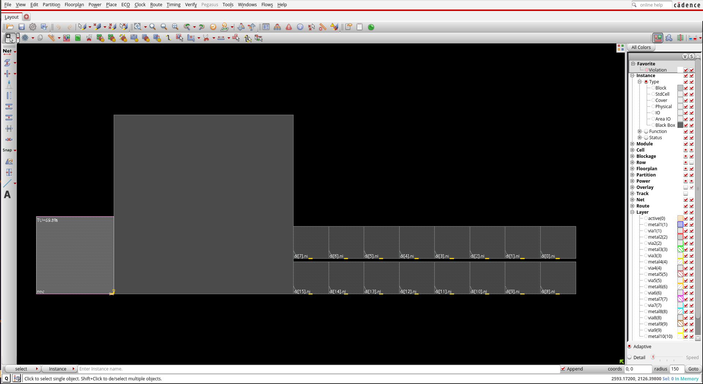
3.2.2. Floorplanning
Use the following tcl commands:
set step "floorplan_top"
set rpt_dir "./reports/"
setPinConstraint -side {top bottom} -layer {M2}
setPinConstraint -side {right left} -layer {M3}
floorPlan -r 1 0.6 20 20 20 20
snapFPlan -guide -block -stdCell -ioPad -pin -pinGuide -routeBlk -pinBlk -ptnCore -placeBlk -macroPin
The setPinConstraint command sets constraints for I/O pins.
For example the following command set the pins in top and bottom core sides to M4 later.
setPinConstraint -cell top_design -side {top bottom} -layer {M4}
- Macro Placement
In this part, we would like to use a systematic approach to place the macros:
selectInst {dl[0].ni}selectInstselects an instance and highlights it in the design display window.Now, from the menu select floorplan then Relative Floorplan and Edit Constraints….
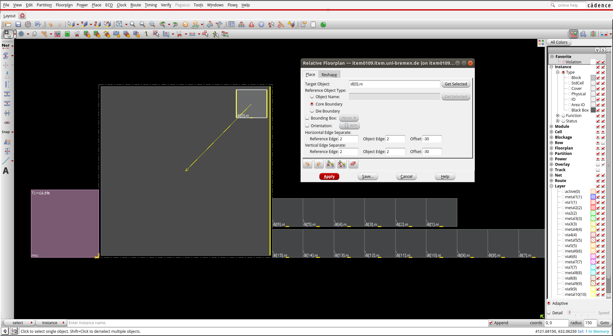
The Relative Floorplan feature allows you to place macros relative to other reference objects. If the reference object moves, the relative placement macros will move with it and constraints to the object. Use relative floorplan constraints to place the array of blocks at the top right.
The
create_relative_floorplancommand captures and defines the placement relationship of floorplan objects independently from the actual coordinates in a floorplan, and resizes modules or blackboxes based on other floorplanobjects, even outside the core boundary. You can use this command after importing the design. For example, this command consider the following command:create_relative_floorplan -place {dl[0].ni} -ref_type core_boundary -horizontal_edge_separate {2 -30 2} -vertical_edge_separate {2 -30 2}It places the dl[0].ni proportional to core bounderies so that the 2nd edge of the reference and 2nd edge of the object dl[0].ni has offset of -30 in horizontal direction. Similarly, the 2nd edge of the reference and 2nd edge of the object dl[0].ni has offset of -30 in vertical direction.
From menu select Floorplan then Edit Floorplan and Set Instance Placement Status.
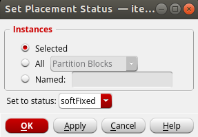
The softFixed placement status means that instances cannot be moved by global placement and can only be moved by the legalization step of detail placement. Instances with this status can also be upsized by optimization.
Now, use
delete_relative_floorplan -allcommand to delete the created relative floorplan constraints.Then, we select the macros we would like to place relative to the dl[0].ni:
deselectAll selectInst {dl[15].ni} selectInst {dl[14].ni} selectInst {dl[13].ni} selectInst {dl[12].ni} selectInst {dl[11].ni} selectInst {dl[10].ni} selectInst {dl[9].ni} selectInst {dl[8].ni} selectInst {dl[7].ni} selectInst {dl[6].ni} selectInst {dl[5].ni} selectInst {dl[4].ni} selectInst {dl[3].ni} selectInst {dl[2].ni} selectInst {dl[1].ni} selectInst {dl[0].ni}Then, from the memu select Floorplan, Relative Floorplan and the Define Array Constraint.
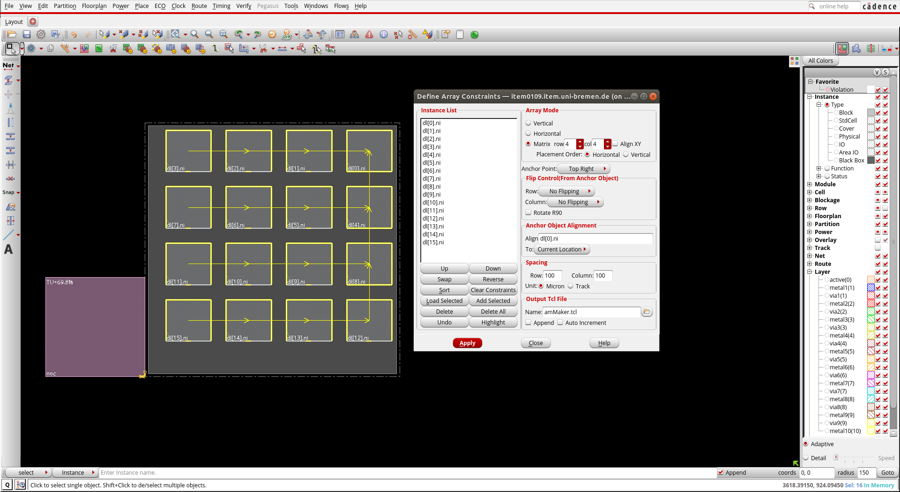
NOTE: Objects can be placed at specific coordinates using the Attribute Editor or the placeInstance command.
Finally, use the following tcl commands:
deselectAll clearRelativeFPlan
- Placement and routing blockage
Placement halos are placement blockages around blocks which prevent cells from being placed inside the halo area. From the menu select Floorplan then Edit Floorplan and Edit Halo. Fill the form as follows:
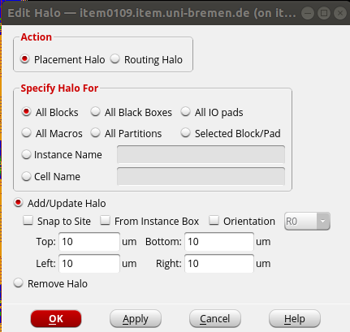
You can also use the following tcl command:
addHaloToBlock {10 10 10 10} -fromInstBox -allBlockIt is also possible to use placement blockage and routing blockage by clicking on and icons. Unlike halo that prevents placement blockage associated with a block, a placement blockage prevents cell placement in a specific area. Use placement blockage icon or use key binding (shift + Y) to create a placement blockage on one of the macros edges. Press (A) to to come back to Select by Box mode and double click on the area that you have created. In the Attribute Edditor windows, change the Type from Hard to Soft.
Hard blockage means no standard cells can be placed in this area, while the soft blockage prevents global placement from placing cells in the area but allows placement refinement, timing optimization and clock tree synthesis to place cells in this area as needed.
- Power Routing
First, the global nets for power and ground must be assigned for the entire design. This can be done using the following commands:
globalNetConnect VDD -type pgpin -pin VDD -all globalNetConnect VSS -type pgpin -pin VSS -all globalNetConnect VDD -type tiehi globalNetConnect VSS -type tielo
Now with the power and ground nets logically assigned, power planning can be done. In this design, power and ground rings are added around the core area. Power and ground stripes are also added to create the power grid. The
addRingandaddStripecommands are used to create the power grid. You can use the following tcl commands to add power rings and stipes to the design:addRing -nets {VDD VSS} -follow core -layer {bottom metal5 top metal5 right metal6 left metal6} -width 5 -spacing 2 -offset 4 addStripe -nets {VDD VSS} -layer metal5 -width 10 -spacing 10 -set_to_set_distance 120 -xleft_offset 20 -xright_offset 20 addStripe -nets {VDD VSS} -direction {horizontal} -layer metal6 -width 5 -spacing 10 -set_to_set_distance 120 -ytop_offset 50 -ybottom_offset 50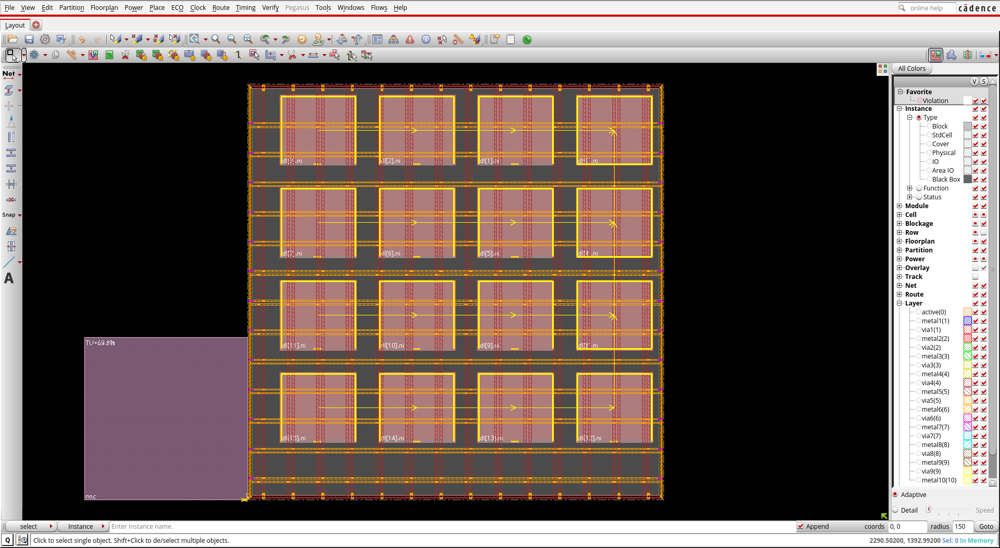
Finally, you can use the speciall route to route the power and ground structure. Use the following command:
sroute -nets {VDD VSS} -allowLayerChange trueYour floorplan should look like this.
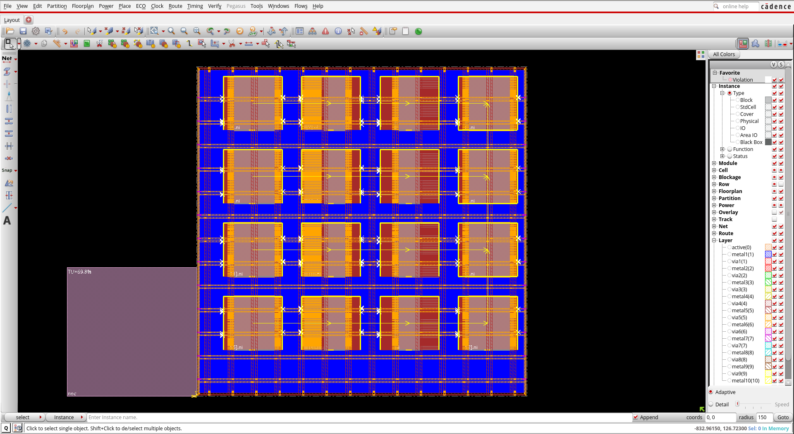
Before, you can save the design, you should check the design for DRC:
verify_drc
Finally, you should report and save the design:
analyzeFloorplan -outfile $rpt_dir/analyzeFloorplan_top.rpt saveDesign ./results/$step.enc
3.2.3. Placement of Standard Cells
After the floorplanning, you can place the design. Use the following tcl command file to place the standard cells:
set step "place_top" set rpt_dir "./reports/" setPlaceMode -congEffort high setPlaceMode -fp false -placeIOPins 1 #Place the design place_opt_design ## Reporting and saving the design timeDesign -preCTS -outDir $rpt_dir -prefix $step report_timing > reports/timing_report_$step.rpt saveDesign ./results/$step.enc
3.2.4. Clock Tree Synthesis
In this section, we will go through a basic flow of clock tree synthesis.
The clock tree synthesis contraints are derived from the .sdc file that is read in with the design at the very beginning.
For example, you have to choose what buffers to use and which types of clock routing to implement.
Properties other than that of can be derived from .sdc file, can be saved in a .ccopt file.
You should source this file before using ccopt_design command.
First, you should set your timing option. setAnalysisMode command sets the global analysis modes for timing analysis.
Here, the analysis type is set to on-chip variation. In this scenario, delay is calculated in one path based on maximum operating conditions and is calculated for another path based on minimum operating condition.
Besides, the cppr option is set to both. This options removes the pessimistic scenarios which never happens for both hold ans setup analysis.
set_analysis_view -setup {ana1} -hold {ana1}
setAnalysisMode -analysisType onChipVariation -cppr both -checkType setup
cleanupSpecifyClockTree
Next, you can adds a non-default rules. These rules are helpful to harden the sensitive nets like clock nets. The clock tree structure is divided into Top, Trunk, Leaf.
add_ndr -name default_2x_space -spacing {metal1 0.38 metal2:metal5 0.42 metal6 0.84}
create_route_type -name leaf_rule -non_default_rule default_2x_space -top_preferred_layer metal4 -bottom_preferred_layer metal2
create_route_type -name trunk_rule -non_default_rule default_2x_space -top_preferred_layer metal4 -bottom_preferred_layer metal2 -shield_net VSS -shield_side both_side
create_route_type -name top_rule -non_default_rule default_2x_space -top_preferred_layer metal4 -bottom_preferred_layer metal2 -shield_net VSS -shield_side both_side
set_ccopt_property route_type -net_type leaf leaf_rule
set_ccopt_property route_type -net_type trunk trunk_rule
set_ccopt_property route_type -net_type top top_rule
setDesignMode -process 40
Before you can create the clock tree by running the command ccopt_design, some other properties should be set:
set_ccopt_property target_max_trans 0.150
set_ccopt_property target_skew 0.150
set_ccopt_property max_fanout 20
set_ccopt_property update_io_latency 0
set_ccopt_property buffer_cells {BUF_X1 BUF_X2 BUF_X4 BUF_X8 BUF_X16 CLKBUF_X1 CLKBUF_X2}
set_ccopt_property inverter_cells {INV_X1 INV_X2 INV_X4 INV_X8 INV_X16}
Traditionally, the balanced skew is used to balance the clock tree. In this case, the insertion delay is tried to be close to zero. Thus, the clock design is independent of the data path design. However, it can be costly, especially in large designs. The utilization of skew to meet the timing of the design is called usefullskew.
Here, we use usefulskew method:
setOptMode -usefulSkew true; setOptMode -usefulSkewCCOpt extreme; ccopt_design
Next, look into the final timing summary (WNS is the worst negative slack of the timing path, and TNS is the total negative slack).
It is possible to check the timing using time_design -post_cts for the setup time check and time_design -post_cts -hold for the hold time check.
If you have a hold violation (negative slack in hold time), run the following optimization command:
opt_design -post_cts -hold
Let us have a look at the clock tree results. Make sure you are in the physical view. Select clock - CCopt Clock Tree Debugger from the menu. Click Ok on the appeared windows using default values.
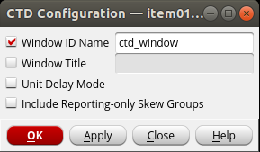
- Go through the following steps to get familier with the debugger:
- Use "f" on keyboard to fir into the window.
- Use “Z” and “Shift+Z” on keyboard to zoom in and out.
- You can zoom in to the buffers by clicking and dragging the right mouse button over an area.
- Select a leaf cell or a clock buffer in clock tree debugger and notice the innovus physical view zooms to that cell (make sure the strandard cell visibility is selected in left side of the main innovus windows.)
- Select the innovus main windows and press "f12" to dim the background.
- from Gebugger wondows click on View - Enable clock path browser. In the clock path browser, select the skew group. Right-click on a path, click on highlight, Max Path, select highlight color. The path is highlighted in debugger windows. The same path is also highlighted in Innovus main window. Press "f" and then "f12". You can clear the highlights in the main innovus window by selecting view - clear hightlight - clear all.
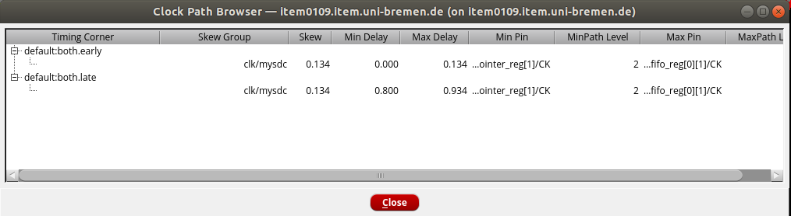
Finally, we can save the results after the cts:
set step "cts_top" set rpt_dir "./reports/" report_ccopt_clock_trees > $rpt_dir/ccopt_top.rpt report_power -clock_network all > $rpt_dir/power_top.rpt timeDesign -postCTS -numPaths 10 -outDir $rpt_dir -prefix $step timeDesign -postCTS -hold -numPaths 10 -outDir $rpt_dir -prefix $step ##Design saving saveDesign ./results/$step.enc
3.2.5. Routing
Now, we can use the following tcl commands to route the design.
set step "route" set rpt_dir "./reports/" setNanoRouteMode -routeWithSiDriven true setNanoRouteMode -routeInsertAntennaDiode true setNanoRouteMode -routeAntennaCellName "ANTENNA" setNanoRouteMode -routeWithTimingDriven true routeDesign -globalDetail setFillerMode -add_fillers_with_drc false -ecoMode true addFiller -cell FILLCELL_X8 FILLCELL_X4 FILLCELL_X2 FILLCELL_X1 -prefix FILLER
setFillerMode controls some aspects of how the software adds filler cells. Here,
you can check the timing of your design and save the design as follows:
timeDesign -postCTS -numPaths 10 -outDir $rpt_dir -prefix $step\_setup timeDesign -postCTS -hold -outDir $rpt_dir -prefix $step\_hold defOut -floorplan -placement -netlist -routing ./results/$step.def.gz saveDesign ./results/$step.enc
You can notice the violating paths for hold timing.
3.2.6. Optimization
Now, let's fix the violating path by optimizing the design. Use the following commands to do so:
set step "routeopt_top" set rpt_dir "./reports/" deleteFiller setOptMode -holdTargetSlack 0.075 setOptMode -fixHoldAllowSetupTnsDegrade false optDesign -postRoute -hold -outDir $rpt_dir -prefix $step\HoldIncr -expandedViews setFillerMode -add_fillers_with_drc false -ecoMode true addFiller -cell FILLCELL_X8 FILLCELL_X4 FILLCELL_X2 FILLCELL_X1 -prefix FILLER timeDesign -postRoute -expandedViews -outDir $rpt_dir -prefix $step timeDesign -postRoute -hold -expandedViews -outDir $rpt_dir -prefix $step\_hold report_power -outfile $rpt_dir/$step\_power.rpt report_area -out_file $rpt_dir/$step\_area.rpt saveDesign ./results/$step.enc
We can check the timing using the timing debugger. In menu, choose Timing - Report Timing…. Fill the form like the figure below and click on ok. This will generate the timing report for post-routing.
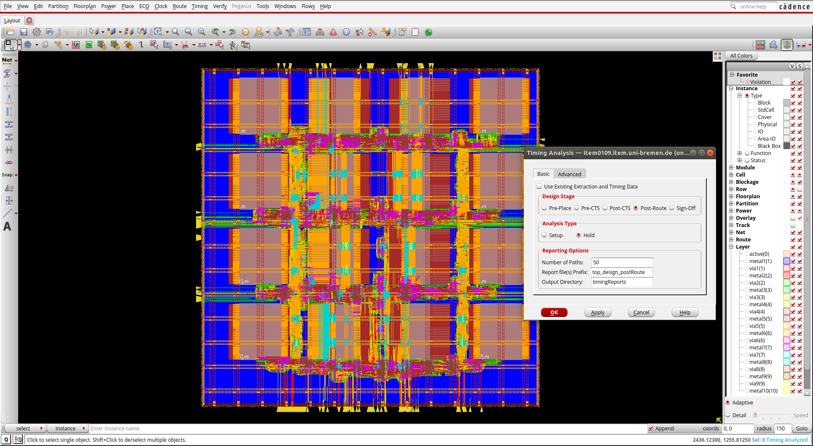
In menu, choose Timing - Debug Timing …. After calculating the delay the Timing Debug window will appear.
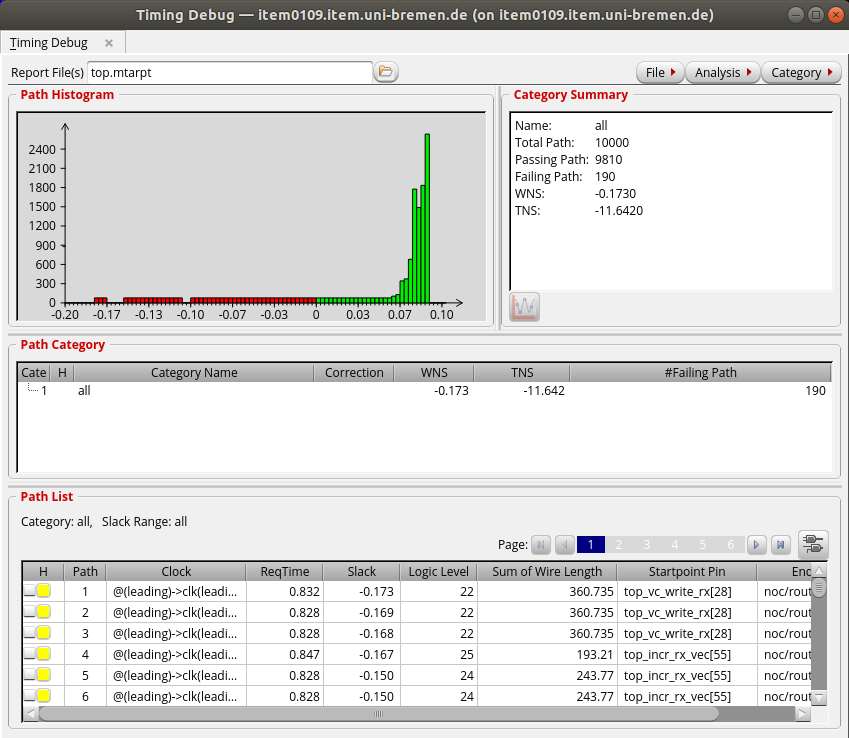
Here, you can see the Failing paths, Worst negative slack and total negative slack. The red bars in the histogram shows the failing paths. In the path list section, you can find the paths which fail the timing. Click on one of them. The path is highlighted in the main windows and the Timing Path Analyzer window will appear.
Now you can close the timing debugger windows.
And finally, you can verify the design:
verify_drc -report reports/top.drc verify_connectivity -report reports/top.connect streamOut results/top_design.gds -mapFile streamOut.map -libName my_library -units 2000 -mode ALL